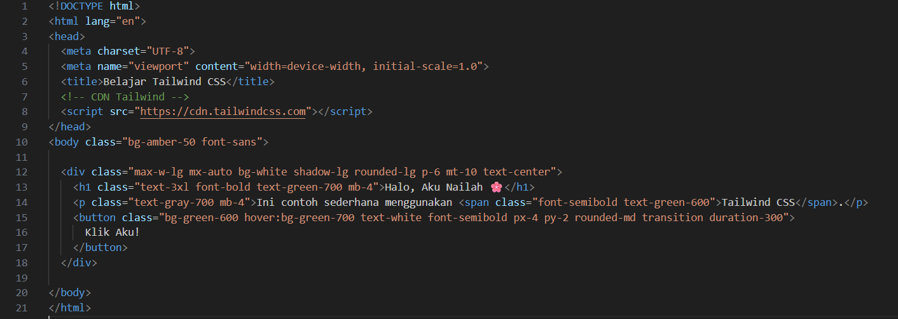

Tentang Saya!
Aku adalah seorang mahasiswi yang sekarang sedang berada di semester 3 program studi Ilmu Komputer di Fakultas Ilmu Komputer dan Teknologi Informasi Universitas Sumatra Utara.

NIM 241401002
KOM B
Aku adalah seorang mahasiswi yang sekarang sedang berada di semester 3 program studi Ilmu Komputer di Fakultas Ilmu Komputer dan Teknologi Informasi Universitas Sumatra Utara.

Hobiku ada banyak sekali!! Mulai dari menggambar, memasak, melukis dan masih banyak lagi. Tapi Hobi yang paling sering aku lakukan adalah menggambar, karena dengan menggambar aku bisa menuangkan imajinasi yang ada di kepalaku menjadi nyata!!
Motto hidupku adalah "Jangan takut untuk mencoba hal baru karena itulah cara kita belajar dan berkembang". Jadi kalau kita merasa sesuatu masih belum sesuai dengan yag kita inginkan maka kita harus mencoba lagi dan lagi!
| Hari | Jam | Mata Kuliah |
|---|---|---|
| Senin | 08.50 - 10.30 | Grafika Komputer |
| 10.30 - 12.10 | Desain Interaksi | |
| 15.00 - 16.40 | Manajemen Seni Pertunjukan | |
| Selasa | - | - |
| Rabu | 08.50 - 10.30 | Lab Pemrograman Web |
| 10.30 - 13.00 | Basis Data | |
| 13.50 - 15.30 | Wirausaha Digital | |
| Kamis | 08.00 - 10.30 | Struktur Data |
| 10.30 - 13.00 | Pemrograman Web | |
| 13.00 - 15.30 | Kecerdasan Buatan | |
| Jumat | 08.50 - 10.30 | Lab Struktur Data |
| 10.30 - 12.10 | Lab Basis Data | |
| 13.50 - 15.30 | Lab Grafika Komputer |
A. Html
HTML adalah kerangka dasar dari halaman web, anggap seperti "tulang" dari sebuah situs. Html terdiri dari beberapa bagian yang membentuk struktur, ada body, head,dsb tergantung web seperti apa yang ingin kamu buat. Contoh kode sederhana html:
Bagian bagian dari kode diatas terdiri dari: "!DOCTYPE html" Menandakan ini file HTML5, "html" Awal dokumen HTML, "head" Bagian informasi (judul, link CSS, meta, dll), "body" Isi halaman yang ditampilkan di browser, "h1" Heading / judul utama, "p" Paragraf teks
B. CSS
CSS digunakan untuk menghias tampilan HTML seperti warna, font, ukuran, dan tata letak agar web semakin cantik dan menarik. Contoh Css:
C. Tailwind
Tailwind CSS adalah framework CSS siap pakai dan cukup menulis kelas (class="...") di HTML tanpa perlu buat file CSS terpisah. contohnya:
1. Download aplikasi "Visual studio Code" di Google terlebih dahulu
2. Setelah selesai pendownload-an vscode, buat folder di file explorer untuk menyimpan kode dan data pada web
3. Jika folder sudah ada, maka kembali ke vsCode dan buat file teks baru. Lalu setelah itu pilih bahasa pemrogramannya html


4. Setelah memilih bahasa, tekan ctrl + s untuk menyimpan dan simpan di folder yang terlah dibuat tadi
5. Kembali ke file html tadi, ketik html dan pilih "html : 5" maka akan otomatis tersusun struktur awal pembuatan web
6. Tuliskan apa yang ingin kamu isi dibagian body dan itu akan muncul di web mu
7. Lalu jika kamu ingin menghias apa yang sudah kamu tuliskan di kode html kamu bisa membuat teks file baru seperti tutorial diatas namun bahasa pemrogramannya pilih "CSS"
8. Tambahkan kode "link rel="stylesheet" href="..."" di htmlmu dan Hias cssweb sesuai keinginan masing masing dan begitulah tutorial pembuatan web sederhana
Kesan saya selama perkuliahan pemrograman web ini adalah saya belajar agar bisa membuat web sederhana dari 0 dan mendapatkan banyak pengetahuan baru! Saya semakin yakin kedepannya saya bisa mengembangkan skill di bidang ini agar web yang saya kerjakan kedepannya akan semakin bagus. Untuk pesan dari saya adalah semoga kedepannya bisa lebih bagus lagi!!! :D